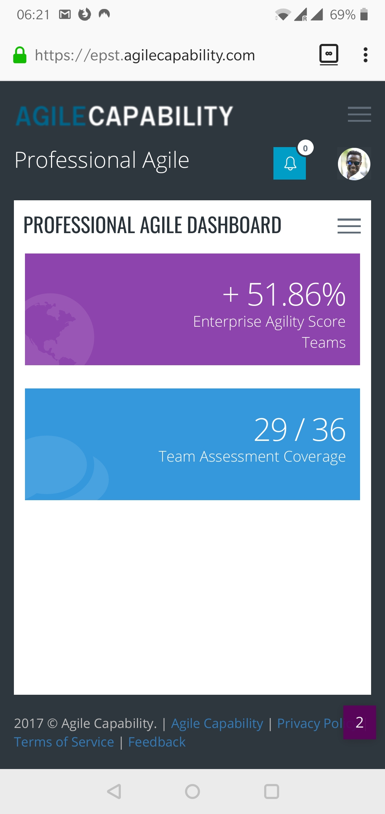

We work with exceptionally large organisations on transformations that have to land. Senior practitioners only. Embedded coaches, Scrum Masters and Product Owners. Cultural change that holds after we leave the room.
Most consultancies describe transformations they have witnessed. Our senior advisors have run them, from the inside. Companies built and led, not only observed; boards sat on, not only reported to. We bring the chair, before we offer advice from outside it.
We do not staff engagements with junior consultants and senior nameplates. Every cohort, every advisory retainer, every transformation programme is led by accredited senior practitioners. Trainers, Agile coaches, Scrum Masters and Product Owners, with the operating scars to prove it.
We do not produce slideware that survives the meeting and dies in the inbox. We do the work of changing how an organisation actually behaves, and we stay until it does.
Most engagements begin with an assessment, then move into delivery, capability building, and ongoing support. The four work better together than they do alone.
Board and C-suite advisory on retainer. Pragmatic, confidential, by people who have run companies of comparable scale. Strategic clarity, governance, economic prioritisation, and the cost of delay no one else is willing to name.
Learn moreMulti-quarter programmes with embedded Agile coaches, Scrum Masters and Product Owners. Adaptive planning, value streams, agile budgeting, and the cultural change without which none of it sticks.
Learn moreAccredited training and certification, delivered through Professional Agile. The benchmark CPA framework, taught in-context, by senior trainers who carry their own scars. Cohorts of 200 on a certified LMS, with annual top-ups.
Learn moreACT, our agile capability assessment platform, makes maturity visible across teams and quarters. MyKojo, our AI mentor, keeps capability alive between cohorts and conversations. Both built in-house, both ours.
Learn moreACT is our agile capability assessment platform. In two to three weeks, we map the working reality of your organisation against the capabilities required for the strategy you have committed to. Where you are strong. Where you are exposed. What is moving, what is stuck, and what the next ninety days should look like.
The output is an evidence-led conversation with your leadership team. Not a hundred-slide deck. A small number of unavoidable truths, ranked by economic impact, with a recommendation you can act on inside a quarter.
Request an ACT assessmentMyKojo is our AI mentor, built into every Agile Capability programme. Trained on our curriculum. Gated to your cohort. Available the moment a question lands, on a Saturday, before a board paper, in the quiet hour before you have to act.
Curriculum-gated, not generic. Owned by us, on our infrastructure. Your cohort data does not become someone else's training set.
See how MyKojo works
Our framework was developed in African enterprise and refined against the working conditions of African banks, insurers, infrastructure integrators and incubators. From there it travelled.
Today our greatest focus is in Accra, where we are Agile Capability Limited, a registered Ghanaian subsidiary. Our practitioners there hold the same accreditation as their counterparts in Lisbon, London and San Diego. Same firm. Same standard.
We have delivered to Ghana's largest bank, its largest insurance company, infrastructure integrators and incubators.